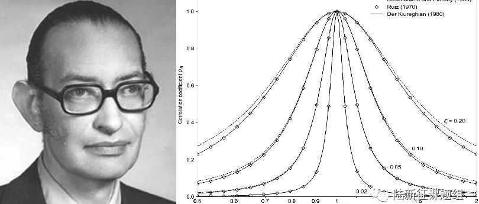

资料翻译：反应谱分析中的振型组合方法：早期理论发展历程
Modal combination rules in response spectrum analysis: Early history
反应谱分析中的振型组合方法：早期理论发展历程
Anil K. Chopra
Earthquake Engineering & Structural Dynamics
First published: 15 September 2020
https://onlinelibrary.wiley.com/doi/full/10.1002/eqe.3333
概要
关键词
早期发展历程，地震分析，振型组合方法，反应谱分析
1 引言
2 初步研究：模态分析
其中有效地震力为
在方程1和2中，m、c和k是质量、阻尼和刚度矩阵，阶数为N，即自由度数（DOF）；是地面加速度，
有效地震力的空间分布，可以被展开为
其中是系统的固有振型，且
第n阶振型对s的贡献是
这与振型如何归一化无关。方程3可以看作在与固有振型相关的惯性力分布上的扩展。
其中表示结构静力响应，即由于外部静力导致的r值。这一代数符号代表结构的属性和所选的响应量r。在方程6中
和是单自由度(SDF)系统第n阶模态的变形和伪加速度响应，由地面加速度激发。自振周期（自振频率）和阻尼比是一个SDF系统的振动特性----在多自由度（MDF）系统中，则指的是第n阶模态。
3 振型组合方法
假设激励是一个平稳随机过程，我们引入响应的平均峰值。
和第n个模态响应的平均绝对峰值。
其中，即与周期和阻尼比相关的平均伪加速度反应谱或设计谱。的代数符号与相同。
其中是模态响应和之间的交叉相关系数，峰值系数 是过程的平均峰值响应与标准差的比值，峰值因子是第i阶模态响应的平均峰值与的标准差的比值(Davenport Vanmarcke 1976 and Der Kiureghian 1980 ) 3-5。
下面进行简化近似计算。
对于所有模态，i=1，2，......N，方程11可简化为(DerKiureghian 1981)2
这个方程最早出现在Rosenblueth(1968)6 和Elorduy(1969)7的论文中，但他们的推导方式不同。本文后面会有叙述。
4 EMILIO ROSENBLUETH的博士论文（1951）
从1949年开始，Newmark担任44层楼高的墨西哥城Latino Americano塔的抗震设计主要顾问。墨西哥城是世界上的地震高发区。在当时，对这样的高层建筑进行完整的动力时程分析是不切实际的。虽然有模态分析程序，但是算力匮乏才是当时最大的障碍。寻找一种可以在当时实现的替代方法是Rosenblueth的博士论文的动力。这篇论文中所提到的主要成果来自于Goodman，Rosenblueth和Newmark（1953）11的论文中。他们的推导也比较容易理解。
Rosenblueth博士学位论文的出发点是Housner的地震动模型( 1947 )，即一系列脉冲在方向、幅度或时间上随机产生。Goodman, Rosenblueth 和 Newmark11的论文中指出：
“作者认为运动由集中加速脉冲的随机阵列组成...．假设脉冲在时间上是随机分布的，要么是小的、均匀的间隔或者是随机间隔。”
其中下标 "d "表示响应的设计值。本文中有一个形象的说法：

Emilio Rosenblueth(1926–1994)
5 第一次应用于设计
6 ROSENBLUETH和ELORDUY 的工作（1969）7
其中为单位脉冲响应函数。随后得到方程
s为白噪声的持续时间。方程19和20表明对于两个频率相等、阻尼比相等的模态，并有。虽然这个重要的结果在一些早期的研究中被提及(Kan和Chopra 197714)，但它并没有对工程领域产生很大的影响，也许有两个原因。首先，的定义可能过于微妙。这一定义(在符号上作了适当的修改)出现在Newmark和Rosenblueth（1971）14的著作中：
7 基于随机振动的工作
7.1 Ruiz的工作16
其中将其代入Ruiz论文方程7下面的未编号方程中，可以得到一个更简单的相关系数方程
7.2 Vanmarcke的工作 (1972–1976)4,17
并且在式(8.64)中定义为"等效阻尼比 "并且具有时变属性（见式28）。对于t值较大的情况，这个函数简化为
方程24 - 26所包含的振型组合方法不限于宽带激励，例如白噪声或滤波白噪声通常也可以用来模拟地面运动。它主要目的是模拟大范围的地面运动，但所需的计算量或达到的计算精度当时并没有记录。
出现的不是，其中s是地震动的持续时间。通过将26式中的替换为，24 - 26式的振型组合方法明确地考虑了地震动的持续时间。然而，如何确定与给定的平均反应谱对应的激励过程持续时间，这一问题仍然没有得到解决。
7.3 Singh 和 Chu的工作(1976)18
7.4 Der Kiureghian'的工作 (1980–1981)2,5
7.5 比较

图1中4个阻尼值的相关系数随模态频率比
致谢
参考文献
Menun C, Reyes JC, Chopra AK. Errors caused by peak factor assumptions in response-spectrum-based analyses. Earthq Eng Struct Dyn. 2015;44:1729-1746. Der Kiureghian A. A response spectrum method for random vibration analysis of MDF systems. Earthq Eng Struct Dyn. 1981;9:419-435. Davenport AG. Note on the distribution of the largest value of a random function with application to gust loading. Proc Inst Civil Eng. 1964;28(2):187-196. Vanmarcke E. Structural response to earthquakes, Chapter 8. In: Lomnitz C, Rosenblueth E, eds. Seismic Risk and Engineering Decisions. Amsterdam: Elsevier; 1976. Der Kiureghian A. Structural response to stationary excitation. ASCE J Eng Mechanics Div. 1980;106:1195-1213. Rosenblueth E. Sobre la respuesta sismica de estructuras de comporamiento lineal. Ingeniería Univ Nacional Autónoma de México. 1968; 38:185-198. Rosenblueth E, Elorduy J. Responses of linear systems to certain transient disturbances. Proceedings, 4th World Conference on Earthquake Engineering, Santiago, Chile, 1969; 1: 185–196. Crandall SH (Ed). Random Vibration. Cambridge, MA: MIT Press; 1958. Crandall SH, Mark WD. Random Vibration in Mechanical Systems. N.Y: Academic Press; 1963. Rosenblueth E. A Basis for Aseismic Design, Ph.D. thesis. Urbana, IL: University of Illinois; 1951 Goodman LE, Rosenblueth E, Newmark NM. Aseismic design of elastic structures founded on firm ground, Proceedings, Separate No. 349, ASCE, Vol. 79, 27 pgs.; see also. Trans ASCE. 1953;120:782-802. (1955) Housner GW. Characteristics of strong-motion earthquakes. Bull Seismol Soc Am. 1947;37:19-31. Kan CL, Chopra AK. Effects of torsional coupling on earthquake forces in buildings. ASCE, J Struct Div. 1977;103(ST4):805-819. Newmark NM, Rosenblueth E. Fundamentals ofEarthquake Engineering. Englewood Cliffs, New Jersey: Prentice Hall Inc; 1971. US NRC. Combining Modal Responses and Spatial Component in Seismic Response Analysis, Regulatory Guide 1.92, Revision 1. Washington, D.C: U.S. Nuclear Regulatory Commission; 1976. Ruiz P. On the maximum response of structures subjected to earthquake excitations. Proceedings, 4th Symposium on Earthquake Engineering, Roorkee, India, 1970; 272–277. Vanmarcke E. Properties of spectral moments with application to random vibrations. ASCE J Eng Mech Div. 1972;98:425-446. Singh MP, Chu SL. Stochastic considerations in seismic analysis of structures. Earthq Eng Struct Dyn. 1976;4:295-307.

黄嘉旭
---End---
相关研究
新论文：抗震&防连续倒塌：一种新型构造措施
长按识别二维码，关注我们的科研动态